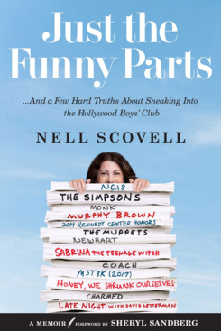

Author : Nell Scovell
Genre : Comedy
Best price : €14,98
Buy at: Book Depository

Just the Funny Parts
You’ve almost certainly laughed at Scovell’s jokes—you just didn’t know it until now.
Just the Funny Parts is a juicy and scathingly funny insider look at how pop culture gets made. For more than thirty years, writer, producer and director Nell Scovell worked behind the scenes of iconic TV shows, including The Simpsons, Late Night with David Letterman, Murphy Brown, NCIS, The Muppets, and Sabrina, the Teenage Witch, which she created and executive produced.
In 2009, Scovell gave up her behind-the-scenes status when the David Letterman sex scandal broke. Only the second woman ever to write for his show, Scovell used the moment to publicly call out the lack of gender diversity in late-night TV writers’ rooms. “One of the boys” came out hard for “all of the girls.” Her criticisms fueled a cultural debate. Two years later, Scovell was collaborating with Sheryl Sandberg on speeches and later on Lean In, which resulted in a worldwide movement.
Now Scovell is opening up with this fun, honest, and often shocking account. Scovell knows what it’s like to put words in the mouths of President Barack Obama, Mark Harmon, Candice Bergen, Bob Newhart, Conan O’Brien, Alyssa Milano, and Kermit the Frog, among many others. Through her eyes, you’ll sit in the Simpson writers’ room… stand on the Oscar red carpet… pin a tail on Miss Piggy…bond with Star Trek’s Leonard Nimoy… and experience a Stephen King-like encounter with Stephen King.
Just the Funny Parts is a fast-paced account of a nerdy girl from New England who fought her way to the top of the highly-competitive, male-dominated entertainment field. The book delivers invaluable insights into the creative process and tricks for navigating a difficult workplace. It's part memoir, part how-to, and part survival story. Or, as Scovell puts it, “It’s like Unbroken, but funnier and with slightly less torture.”
Specifications:
Publisher: N/a
ISBN: 9780062473479
Number of pages: 336
Weight: N/a
Dimensions: N/a
>>Reviews
When people conclude that it must be 'soooo much fun' to work on The Muppets, it's like assuming the Oompa Loompas love every minute working at Willy Wonka's chocolate factory. To outsiders, it's all chocolate waterfalls and funny songs. But late at night, someone's got to clean up after all those nut-testing squirrels. And let's just say the nuts are high in fiber.
Nell Scovell hits the mark throughout this fun and spot-on inside look at Hollywood...from a female writer's point-of-view. She has written primarily for American television shows and it's her experiences which she relates here, especially working in what remains a male dominated hierarchy. She breaks the chapters into:
Who Is Nell Scovell?
Here we learn about the author, her background, and her first forays into the industry. It is in this section that she gets into the ugly part of being a sole female writer on a show where the head writer (hint: he also had several country music hits and still performs today) forced himself on her. For anyone who has followed the #MeToo campaign, this is a very disturbing part of the book. And for anyone who has ever worked in Hollywood, one that still remains prevalent today.
Get Me Nell Scovell!
Now she is established and starts getting job offers. Here, she becomes, briefly, part of the David Letterman Show, where she was, again, a sole female writer. Perhaps this explains why I never cottoned to Letterman (or Leno for that matter) as the talk show program was a basic white-male frat house. It's not a good view and Letterman's dalliances with female personnel are yucky. Kudos to Scovell for focusing on professionalism rather than blind ambition. This chapter is also where she hits on another part of the book I like, which is explaining how a good workplace, not just Hollywood, should provide opportunities for all. Specifically, she calls out the virtues of a great leader:
Buy now

$18,99

Not available

Not available

Not available
* This price contains free delievery